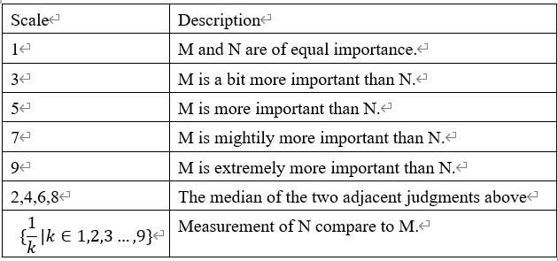

1. Please enter the level of the job you want to do:
We set the job type as a constant q between 1 and 5.
q=1:courier delivery person, construction site builder, etc
q=2:restaurant dishwashing worker, handing out flyers, etc
q=3:salesmen, receptionists, etc
q=4:ordinary employees, interns in small companies, etc
q=5:tutors,teaching,assistants, interns in large enterprises, etc
2. Please enter your preferences in the following way:
If work attribute M is compared with the work attribute N,
then enter numbers as following rules:
